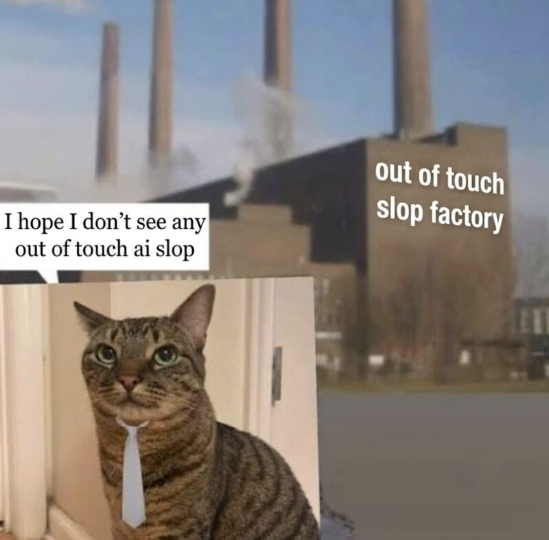

Akuma OS
AI will write 600 bugs
and I will write 600 more
at some point you gotta do some real engineering
Kirill Maksimov · 2026-08-17

699 documented, dated, fixed
The checks got cheap too
More code generated means more code to check. But the same shift that made the code cheap makes the checks cheap — probes, tripwires, self-tests, boot suites, A/B runs on real workloads, all cheap enough to write per-bug and leave in place.
So the checks stop being a budget item you ration, and start being the default response to every commit.
Act I · the landscape
What is Akuma?
Bare-metal AArch64 kernel in Rust, no_std:
preemptive scheduling with shared-kernel SMP, per-process address spaces with
demand paging and CoW fork, dynamic libraries, ext2, smoltcp
networking stack, limited Linux binary compatibility, runs Docker
images like redis:alpine. Comes with apk and Go 1.26.3,
Rust and Cargo (stable and nightly), clang / gcc / tcc, git, Bun.
Runs on QEMU and AWS, verified on m6g.metal —
Graviton2, 64 cores — under Firecracker v1.16.1 on KVM, answering SSH from across
the internet.
A developer oriented operating system inspired by early 2000s experience, with modern tooling. The first program written for Akuma inside Akuma was written by GLM-4.7 on 22 Aug 2026.
=#= .-
+*#*:.:-**
+%%#%##***
+%%%#%%#**.
+%@@@%%%+*:
:::::--=+++*%@%@%%%%*-
:-+##%%%%%%%%@%@#%%@%%%%##%+
.=##%%%%%%%%%@@@@@%#%%@%%%@@@%%-
.*%%%%%%%@%%%%@%@@@@%%%%@%%%%%@@#-
%@%%%%%%%%%%@%%%%%@@@%%%@@@@@%%%#+
*%%%%%@%@@%@@@%%%%#%@@@@@@@%%@@%@@@*+--
::=+*#@@@@@@@@@@@%%%%%%@%%@#----=**@%@#
.--+**%@@@@@%@@%%@@%* :-.
::::---#@%%*
Act I · the landscape
Competitive landscape
| Redox | Asterinas | Akuma | |
|---|---|---|---|
| since | 2015 | ~2022 | 2026 |
| people | team + nonprofit | 50+, 3 universities | 1 |
| funding | EU NGI grants | Ant Group + Intel | none |
| high-water | COSMIC desktop, packages | nginx faster than Linux, Firefox, Redis at parity | nginx, Redis + official image, Go, rustc, llama.cpp |
| runs on | real hardware | QEMU, cloud VMs — in production at Alibaba Cloud | QEMU · Graviton2 metal, Firecracker/KVM |
| builds itself | not yet | undocumented | yes |
Asterinas is the one worth studying. A framekernel: all
unsafe is confined to one library (OSTD, ~15k lines, 14% of the
kernel — about the size of seL4's verified core), so every service above it
is written in 100% safe Rust. They verify that tiny TCB for memory
safety, then reach for model checking and tests for everything past
it. Logic-level verification is explicitly aspirational.
Measuring against Linux and against them is good practice — a better reference turns “this feels slow” into something to go fix. It is where a lot of this work came from.
Act I · the landscape
Same pressure, opposite answers
| AI-contribution policy | |
|---|---|
| Redox | Banned, Feb 2026, enforced — LLM-labelled contributions closed on sight; bypassing it is a project ban |
| Asterinas | Welcomed and automated — “AI is welcome, but the human is responsible”; ships an AI PR-review bot |
| Akuma | No policy |
Same pressure — generation outpacing review capacity. Two structurally opposite answers, both from funded, multi-institution projects.
Both policies legislate who writes the code. Neither addresses who keeps it.
Act I · the landscape
the bugs
| subsystem | fixes | % | /kLoC |
|---|---|---|---|
| Syscall / ABI | 128 | 22.3% | 20.5 |
| Memory & VM | 113 | 19.7% | 23.3 |
| SMP & Locking | 87 | 15.2% | 41.8 |
| Scheduler & Process | 76 | 13.3% | 6.9 |
| Networking | 54 | 9.4% | 9.3 |
| Containers | 24 | 4.2% | 21.5 |
| Boot & Drivers | 23 | 4.0% | 6.0 |
| Misc / cross-cutting | 22 | 3.8% | 58.7 |
| VFS & Filesystem | 17 | 3.0% | 4.2 |
| Console & Terminal | 16 | 2.8% | 16.6 |
| Signals & Exceptions | 13 | 2.3% | 3.8 |
| kernel | 573 | 100% | 13.1 |
| outside it — apps, toolchain, ssh, rump | 126 | — | — |
Act II · the workflow
Have a concrete goal: run X
Compatibility with X, in order to run X.
| target | what it forced |
|---|---|
| redis | /proc/<pid>/*, MADV_FREE honesty, TCP connect-state, short-write writev |
| rust / cargo | MAP_SHARED writeback, 128 KB argv, thread-group reaping, getpriority |
| golang | signals on a foreign signal stack, pidfd, waitid parentage, fork/exec |
| llama.cpp | lazy mmap, file-page eviction, heap-growth headroom |
| nginx | zero new syscalls — then three kernel defects behind "stops answering after enough traffic": a stubbed shutdown(2), listener-backlog exhaustion, socket reclaim |
A real program is a specification you didn't write and can't argue with.
Act II · the workflow
Self-hosting: it compiles itself
Cloned from GitHub and built inside Akuma, on a nightly musl toolchain:
~ # git clone https://github.com/netoneko/akuma.git \
&& cd /tmp/akuma && cargo build --release
Almost no hobby operating system gets to self-hosting. Redox reached running rustc and cargo natively in January 2026 — a decade in, on the third attempt — and does not yet build itself. Asterinas hasn't published a self-build result — with 210+ syscalls, Firefox and QEMU running, rust/cargo probably work as clockwork.
Twenty consecutive first-try builds. A failed clean build is a clear regression finding.
Act II · the workflow
Audit before touching code
Update the references and the diagrams first. Then reason about where the problem could be.
- Re-measure the project's own headline numbers. One audit opened by knocking a claimed 88.8% down to 23.0% — the gap was a bug in the profiler.
- Standing rule: never trust a percentage without re-measuring.
- Enumerate the candidate theories explicitly, before writing any code.
Updating the docs is how you find out your mental model and the code have diverged.
Act II · the workflow
Isolate theories with probes, then discredit them
Build the smallest thing that can tell two theories apart. Kill theories until one survives.
Adding instrumentation and tracking the data flow is always worth it. Where a value came from, who owns it, when it was freed — that work pays off even when the theory it was built for dies.
Probes inspect state, not behaviour. Keep the good ones; leave them armed.
The bug is almost never where the error appears.
Act II · the workflow
Then A/B it on real workloads
Any change to architecture or implementation detail triggers an A/B spree — on real software, once the probes pass. Same binary, one variable, zero tolerance.
- host unit tests for the logic
- a boot self-test hitting the real entry point
- same-binary A/B stress on real workloads — in-VM
rustc -j4, Go fork/exec stress, Redis, a container pull
Any stuck / RECOVERED / PANIC / WILD / SPURIOUS marker fails the run.
Remember, the tests were written by the AI who wrote the bug, and someone signed off on them.
Act III · how it's built
AI-assisted development: build your intuition
LLMs are stateless, engineers aren't. Good intuition indicates a strong mental model.
Documenting the development process and helping the LLM discover the context by itself is cheap and always pays off.
| tier | job |
|---|---|
runbooks/ | do X, expect Y — ends in Verify |
reference/ | current state only, each page graded A / B / C for how far to trust it |
archive/ | 340 investigations, verbatim, never rewritten — including the wrong theories |
| agent context | the standing rules, so they're never re-litigated |
Written to reconstitute project-specific intuition in a reader who starts from zero.
The failure mode this guards against, logged once in the archive: during what should have been a mechanical port, two syscalls were rewritten instead of copied — breaking an ABI. Caught and reverted. There is no way to know how many similar substitutions weren't.
Act III · how it's built
Learn from history
A full OS development cycle is a surprisingly large dataset. 2,039 commits, 355 investigation docs. What can be mined:
- 699 distinct fixes across 15 subsystems, itemised, dated, cross-referenced.
- Two crisis windows, from commit volume alone — an independent churn-per-file measure lands on the same two months.
- Recurring defect types. ~3% of all fixes are the same underlying bug rediscovered in a different subsystem: stale address-space pointer ×3, lock-held-across-blocking ×4, readiness gaps ×6 across four files. The most-repeated shape: a raw index outliving the thing it names.
Act III · how it's built
Clean up after yourself
Generation is cheap, so the default move is a second copy. A clone detector over the kernel found 5,370 duplicated lines — 5.6% of the tree, and that is the floor, not the estimate. What the copies cost:
| written more than once | copies | what it cost |
|---|---|---|
the CoW break path, exceptions.rs | 3 | a refcount underflow in the page-fault path — frames freed while still mapped. Three separate fixes |
X and X_from_path, down a whole call chain | 4 pairs | a second, hand-rolled ELF parser — which one validates your dynamic linker depends on which execve path ran |
| the bounded channel write | 2 | the stream-truncation fix landed on stdout, never on stdin |
| errno tables | 5 | -12 (ENOMEM) returned under a comment reading ENXIO. 116 definitions → 39 |
| the runtime-registration pattern | 3 | every network poll took a spinlock to read a function pointer |
| production logic, re-typed inside its own test | 13 | the test exercises its copy, so production drifts for free — plus 25 more that assert true == true |

“Coding is solved.”
— some guy with a $2T company
Act III · how it's built
mood
2025-11-28 does not actually detect ram 2025-11-28 at least it still runs 2025-11-30 allocation is the root of all evil 2025-11-30 this is clearly getting out of hand 2025-12-27 aaaaaaaa CAT 2026-01-21 at least it boots 2026-04-02 god damn it x2 2026-04-03 why are we here? just to suffer? 2026-08-06 more tests and fixes, cargo remains undefeated 2026-08-11 curious case of nothingburger 2026-08-13 java crossover episode 2026-08-21 lmao lost networking but how 2026-08-21 hell yeah graviton
Time honored Eastern European tradition: curse, complain, then complain some more, still do the job.
go build defeated
akuma:~$ apk add go git
akuma:~$ git clone --depth 1 .../akuma-playground.git
akuma:~$ cd akuma-playground && rm -f *.c *.rs
akuma:~$ CGO=0 go build -v .
akuma:~$ ./playground
Hello from Golang on Akuma
The milestone table said "in progress — crashes during compilation" for five months.
Pick a real program. Audit before you touch anything. Probe until a theory dies. A/B on the real workload. Write it down for whoever starts from zero tomorrow.
LLMs are statistical engines and it is your job to turn the stats in your favor.
and it did not stop
Another week, another 100
The previous version of this presentation was finished a week ago. Another 77 bugs have been documented and fixed yet I am sure there will be more than I can imagine.
Conclusion: try to avoid rolling your own operating system.